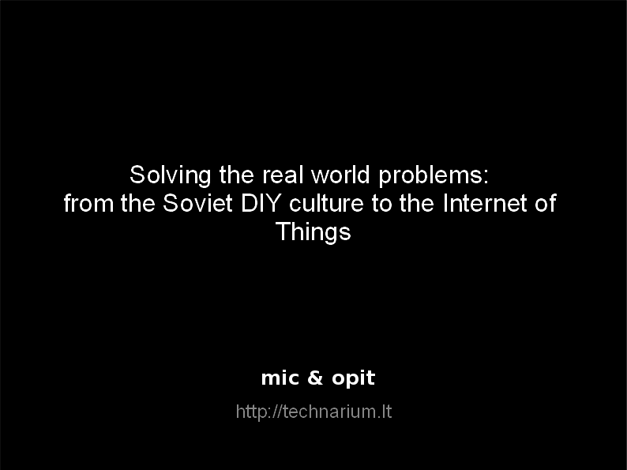
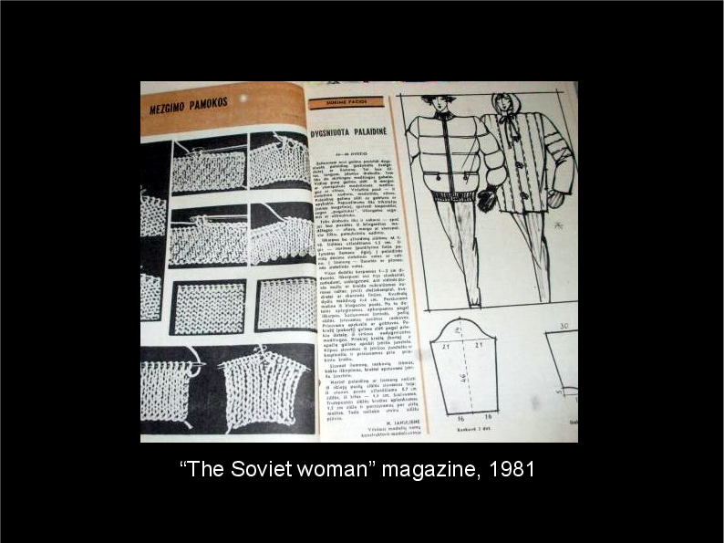
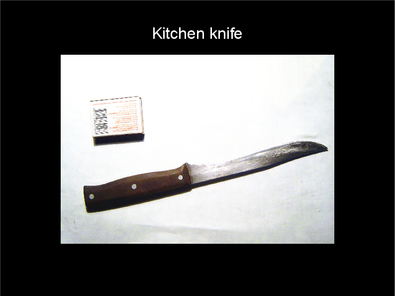
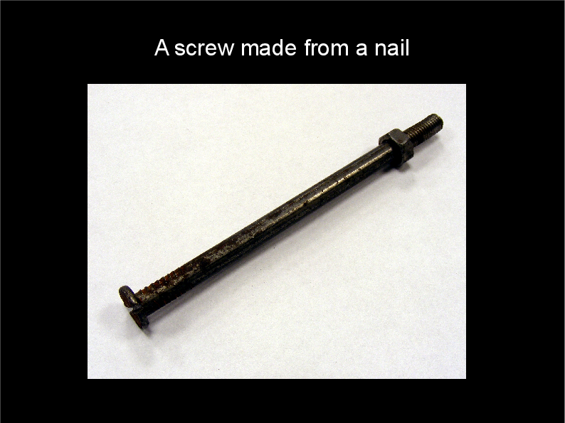
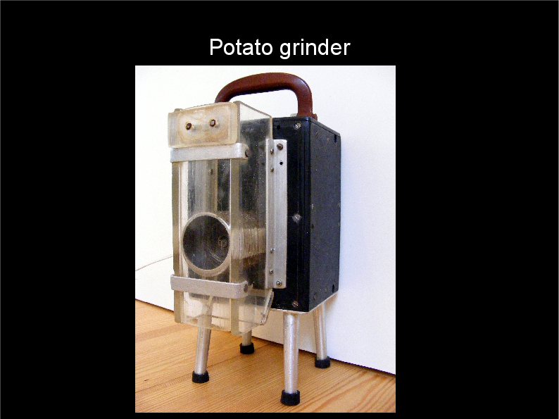
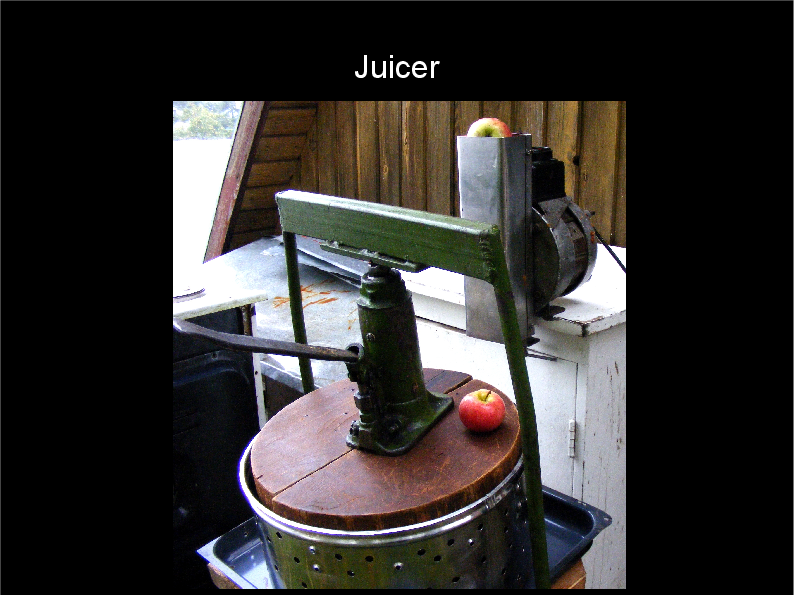
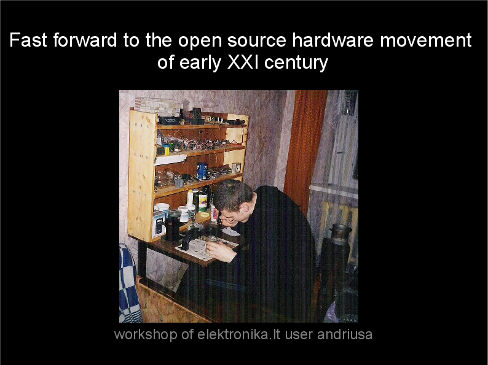
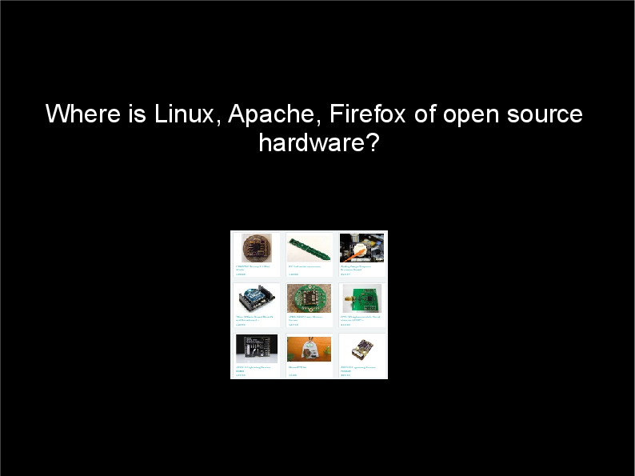
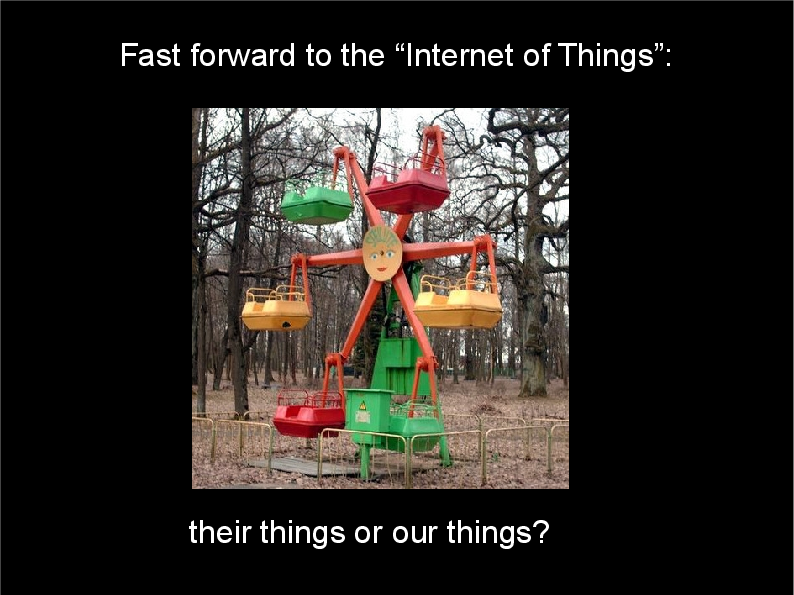

A text version of the talk miceuz gave in Open Hardware Summit in Rome, on 30th September 2014.
The video recording can be found here, together with all the talks from the conference .
|  | Solving the real world problems: from the Soviet DIY culture to the Internet of Things |
|  | We were born in the Soviet Union. We are young, but we still remember - everyone was a maker then. Every father was disassembling, cleaning and tuning the carburetter of the family car on a monthly basis and every mother knew how to sew and fix those jackets with ridiculously wide shoulders. |
| Every
consumer stereo, every TV set was shipped
with their complete schematics, not because the Soviet system
supported DIY, but because the overall quality of mass-produced items
was low and the end user was expected to service and fix them.
Everyone was a maker. Not because it was cool to be a maker, but because you simply could not obtain the stuff. Actually, the first hardware store in my city was called "do it yourself". |
|
|  |
Some examples from the era:Kitchen knife. Origin: manufactured by entrepreneuring spirits on the premises of a shipyard factory. Smuggled home in a briefcase after work. Age: approx. 30-35 years (1980-1985). Materials: scrap steel (exhaust pipe of a maritime vessel engine), hard plastic (unknown), epoxy glue. Tools: lathe, rivet press, press, grinder (all state-owned). |
|  |
A screw made from the nail. Manufactured in a small fishing village by the grandfather of our friend. Apparently he could not obtain the screw he needed. |
|  |
Potato grinder. Designed and manufactured by my neighbour. Single-phase motor, plastics, plexiglass, custom-machined grinder cylinder. Never again I came across a potato grinder that would be so easy to wash and maintain. |
|  |
This is an apple juicer. Made of what not, bits and pieces, made by another neighbour. To make it clear, we are here not to praise the Soviet system. The system sucked alright. However, one point is clear - once there was a modern society which had the virtues of DIY and hacking woven deep into its fabric. |
|  |
Fast-forward to the open source hardware movement of early XXI century. I'm not sure if it's only me, but I have a feeling that the majority of the open source hardware we have now is electronics targeted to the electronics hobbyists. It's mainly recreational. It's as if it exists just because of itself. Does the Open Hardware we build possess the power to change the world? |
|  | Open source software matters because the whole Internet is build with it. What about the open source hardware? Where is Linux, Apache, Firefox of open source hardware? If we as a movement want to make a change, we have to start building stuff that is useful on a daily basis - open source vacuum cleaner? Open source switched-mode power supply? Variable frequency drive? And as long as we are at it, could someone please design me an electric kettle that does not start leaking after two weeks of use? |
|
We have a similar problem the Soviet people had - good quality stuff is scarce and expensive, accessible stuff is of lousy quality. I was reverse-engineering a switched-mode power supply of a dubious origin just recently. The design did not make sense in several aspects - a typical crappy copy of the copy you get for peanuts on Ebay. And I had a thought - what if this power supply was of a known open source design, had openly accessible schematics and comments behind its design decisions? What if we infest the grey market Chinese manufacturers with high quality open designs we'd like to use ourselves? What if we say "cloning is OK after all" so that we can have more nice things? |
|
|  | This is going to get even more urgent when the Internet of Thingies comes along. We better make sure those devices be our things, not their things. |
{kind=link}
{kind=link}
{kind=link}
{kind=link}
{kind=link}
{kind=link}
{kind=link}
{kind=link}
{kind=link}
{kind=link}
{kind=link}